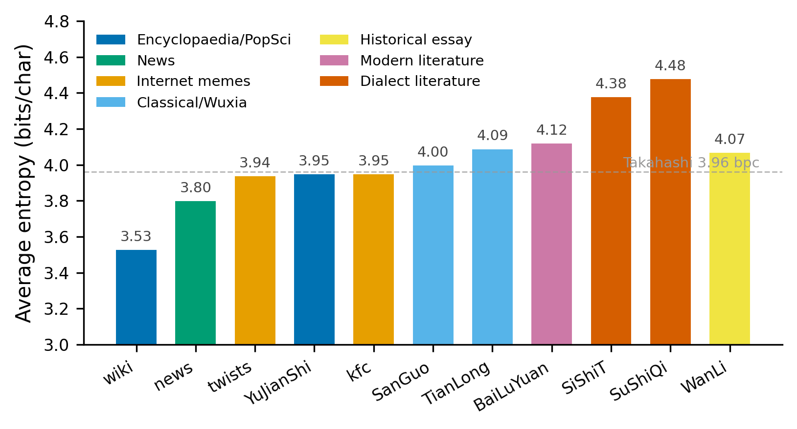
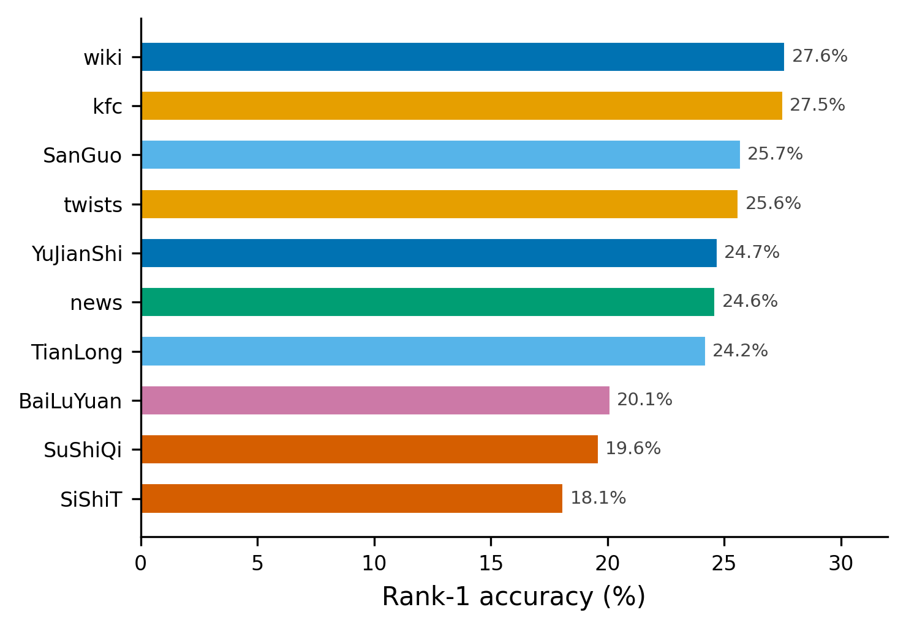
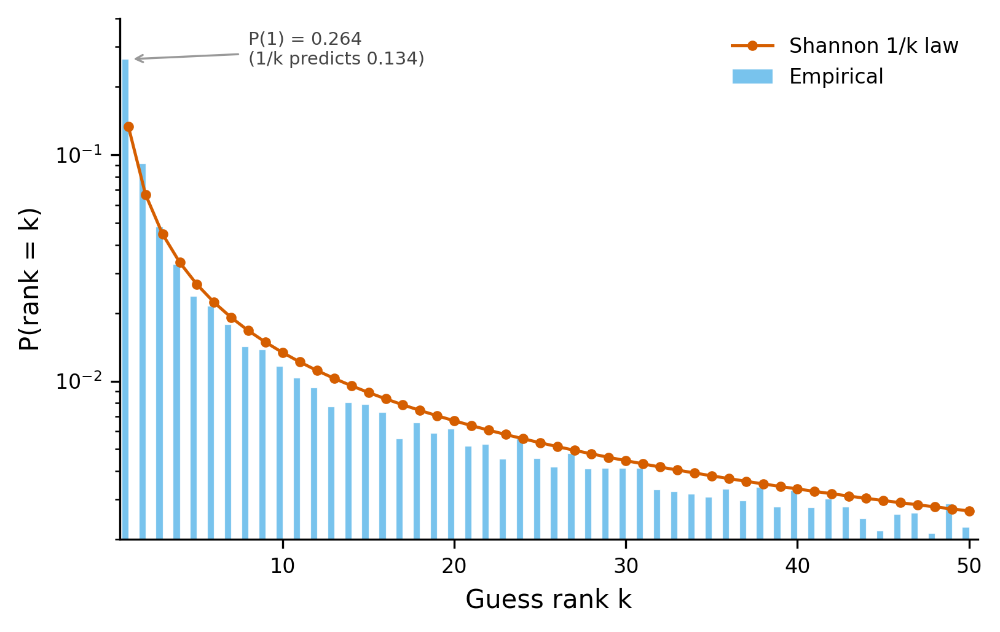

用 LLM 模拟 Shannon 汉语预测实验
为什么做这个实验
这门课上，陈忠敏老师讲到语言的"结构"时引用了《道德经》的一句话："一生二，二生三，三生万物。"语言的层级结构正是如此：特征（<20个）→ 音段（<100个）→ 音节（~1600个）→ 语素（~10000个）→ 词（~1000000个）→ 句子（无穷）。从有限的底层单位出发，通过组合与递归，产生无穷的表达。乔姆斯基把这称为"离散无穷性"（discrete infinity）——语言是一个由有限规则生成可数无穷集合的代数结构。
我是数学系的，对这个"结构"本身很好奇。池老师在方言测量学那节课上用 Jaccard 距离、MDS、Tobler 定律来量化方言的相似性，让我意识到：语言学的很多问题可以转化为数学问题。而信息论提供了一个天然的框架——熵度量的是不确定性，而语言的可预测性正是其结构的体现。
我想知道的是：给定前 $N$ 个汉字时，下一个字的不确定性（熵）如何随 $N$ 变化？这条 $H(N)$ 曲线，就是 Shannon (1951) 为英语构建的"条件熵链"。Shannon 让受试者逐字母预测英语文本，得到一条从 $H_0 = 4.03$ 下降到 $H_\infty \approx 1.0$ 的曲线，揭示了英语的冗余度约为 75%。但这个实验在汉语中从未被做过——英语只有 26 个字母，平均猜 4–5 次就能命中；汉语常用字约 6700 个，零阶平均需要猜约 12 次，人类受试者做不到。
所以我想到：用大语言模型（LLM）替代人类受试者。LLM 可以瞬间访问整个词表的概率分布，不受认知负荷限制。虽然 LLM 不是"人类"，但它的概率输出反映了它在训练数据中获得的语言统计结构——这正是我们想要测量的东西。
已有研究
在动手之前，我确认了汉语熵的研究现状：
表 1 汉语熵已有研究
| 研究 | 方法 | 结果 |
|---|---|---|
| 孙帆、孙茂松 (1988) | 《人民日报》语料库字频统计 | $H_0 = 9.62$ bits/char |
| 同上 | 条件概率 | $H_1 \approx 7.15$, $H_2 \approx 6.65$ bits/char |
| Chang & Lin (1994) | 同义词词林聚类 | ~4.6 bits/char |
| Takahashi & Tanaka-Ishii (2018) | AWD-LSTM-MoS 神经网络 | 4.43 bpc → 外推 3.96 bpc |
Takahashi & Tanaka-Ishii (2018) 的结果（3.96 bpc）是目前最紧的汉语熵率上界。但他们的方法是神经网络交叉熵——在测试集上平均 $\log P$，输出一个数字。这和 Shannon 的预测实验是不同的方法论：神经网络交叉熵是统计量，黑箱，一个数字；而 Shannon 预测实验是逐位置猜测，记录猜测次数分布，可以构建完整的条件熵链。
Takahashi 告诉我们"汉语的熵大约是 3.96 bpc"，但没有告诉我们"给定前 5 个字时，下一个字有多可预测"——而这正是 Shannon 实验能回答的问题。
实验方法
实验的核心流程如下。给定一段文本，从第 5 个字开始，将已知文本作为前缀输入模型，模型输出整个词表（151,643 个 token）的概率分布。然后我们需要判断：模型的预测是否"正确"？
判断方式是字符串匹配。假设原文从待预测位置开始是 $y_1 y_2 y_3 \ldots$，模型按概率从高到低排列出候选 token：$t_1, t_2, t_3, \ldots$。我们依次检查每个 $t_k$：
- $t_k = y_1$？→ 匹配，记录 $\text{rank}=k$，前进 1 个字
- $t_k = y_1 y_2$？→ 匹配，记录 $\text{rank}=k$，前进 2 个字
- $t_k = y_1 y_2 y_3$？→ 匹配，记录 $\text{rank}=k$，前进 3 个字
- 如果 top-1000 内没有任何 token 匹配原文的前缀 → 记录 miss，前进 1 个字
换句话说，我们检查的是：模型预测的 token 中，有没有一个是原文剩余部分的前缀？如果有，取排名最高的那个。这自然处理了多字 token 的情况——如果模型预测"星期四"排第一，而原文接下来也是"星期四"，就一次跳过 3 个字。
每一步记录：匹配的排名、概率、熵值（整个分布的熵），然后前进到下一个待预测位置，重复上述过程。
Shannon 预测的是字母，我预测的是 token（模型的原生子词单位）。这看起来粒度不同，但实际上更合理：模型的 tokenizer 天然处理多字词（如"我们"、"星期四"），不需要额外的字-词映射。代价是结果不能直接和 Shannon 的字母级结果比较绝对值，但条件熵链的趋势和跨文本对比仍然有意义。
模型用的是 Qwen3-0.6B Base（0.6B 参数，非 Instruct 版本，避免 RLHF 干扰概率分布）。这是一个预训练好的语言模型，实验过程中不更新参数——模型不是在"学习"这些文本，而是用它已有的语言知识做 in-context 预测。模型在训练阶段从海量语料中获得了汉语的统计结构，我们的实验是测量这种结构的"强度"。
数据集涵盖 11 个类别（表 2），从古典小说到网络梗。总共约 58,548 步预测，实验在 RTX 5060 8GB GPU 上运行。
实验结果

表 2 各文本类型的实验结果（$N = 5 \to 50$，top-$K$ = 1000）
| 类别 | 步数 | 匹配率 | Rank-1 | 平均Rank | 平均熵 |
|---|---|---|---|---|---|
| wiki | 4228 | 94.0% | 27.6% | 77.1 | 3.53 |
| news | 2693 | 92.0% | 24.6% | 81.4 | 3.80 |
| internet_twists | 1323 | 92.3% | 25.6% | 71.7 | 3.94 |
| human_jianshi | 6450 | 91.6% | 24.7% | 84.0 | 3.95 |
| kfc | 1497 | 91.4% | 27.5% | 76.9 | 3.95 |
| sanguo | 7818 | 95.0% | 25.7% | 81.5 | 4.00 |
| wanli | 7590 | 91.3% | 23.4% | 96.1 | 4.07 |
| tianlongbabu | 7425 | 92.0% | 24.2% | 89.5 | 4.09 |
| bailuyuan | 7399 | 90.1% | 20.1% | 105.9 | 4.12 |
| sishitongtang | 6188 | 91.0% | 18.1% | 102.2 | 4.38 |
| sushi_qiren | 6885 | 90.0% | 19.6% | 103.3 | 4.48 |
如图 1 和表 2 所示，wiki 百科最可预测（$H = 3.53$），方言文学最难预测（$H = 4.48$），差异接近 1 个 bit。所有类别的 top-1000 匹配率都在 90% 以上，但 Rank-1 差异很大（18%–28%）。
古典小说 vs 现代文学：三国演义（$H = 4.00$）比白鹿原（$H = 4.12$）更可预测。原因在于章回体有大量固定套话——"话说"、"且说"、"后人有诗赞曰"——而陈忠实的现代小说语言更灵活。
方言文学最难：四世同堂（$H = 4.38$）和俗世奇人（$H = 4.48$）是熵最高的两类，都带有浓重的方言色彩（老舍的北京话、冯骥才的天津味）。这对模型来说最陌生，因为它在训练数据中见到的方言文本相对较少。
网络梗的悖论：疯狂星期四（$H = 3.95$）的熵比新闻（$H = 3.80$）还高，但 Rank-1 准确率（27.5%）却是最高的之一。这说明 KFC 文案虽然整体不确定性高（因为梗的创意性），但某些固定搭配（如"疯狂星期四"）模型预测得非常准。
历史散文的特殊性：《万历十五年》（$H = 4.07$）介于古典小说和武侠小说之间。黄仁宇的叙事风格在叙述、议论、史料引用之间频繁切换，没有章回体的固定套话，也没有武侠的类型化语言。其 $H(N)$ 扩展实验拟合不收敛——50 段、$N = 200$ 的数据噪声太大，说明历史散文的段落间风格差异比长篇小说更大。
疯狂星期四：反转点预测
作为专项测试，我在每条 KFC 文案的反转关键词位置进行了定点预测：
表 3 KFC 文案反转点预测结果
| 前缀 | 目标词 | 排名 |
|---|---|---|
| ...因为疯狂 | 星期四 | 1 |
| ...肯德基疯狂 | 星期四 | 2 |
| ...今天是疯狂 | 星期四 | 1 |
| ...能给我转50吃 | 肯德基 | 252 |
| ...V我50吃一顿 | 肯德基 | NOT FOUND |
| ...缺五十块买 | 肯德基 | NOT FOUND |
"疯狂"→"星期四"是语言层面的固定搭配，模型轻松预测（Rank 1–2）。但"吃"→"肯德基"是文化层面的梗——"吃"后面什么都能跟，模型无法仅凭上下文推断出"肯德基"。

如图 2 所示，匹配率和熵大致呈负相关。但也有例外——三国演义的匹配率最高（95%），但熵并不是最低的（4.00），说明它的"套路性"体现在高匹配率上，而非低不确定性。

猜测排名分布：与 Shannon $1/k$ 律的对比
Shannon (1951) 在英语预测实验中发现了一个经验规律：第 $k$ 次猜测命中的概率近似正比于 $1/k$。我把汉语实验中所有类别的猜测排名汇总，得到图 4 的分布。

从 $k \geq 3$ 开始，实验分布与 $1/k$ 律高度吻合（比值接近 1.0）。但 Rank-1 是显著的例外：实验测得 $P(1) = 0.264$，而 $1/k$ 律预测只有 $0.134$——差了将近一倍。这说明汉语中"第一个猜测就命中"的情况比 Shannon 的 $1/k$ 律预测的更频繁，反映出模型对汉语最高频 token 的预测能力特别强。
与已有研究的比较
我们的结果（$H = 3.53$–$4.48$ bits/char，$N = 5 \to 50$）和 Takahashi & Tanaka-Ishii (2018) 的神经网络上界（3.96 bpc）处于同一数量级。但两者的方法论不同，不能直接比较绝对值：Takahashi 用的是字级预测，我们用的是 token 级预测。token 是子词单位，可以是 1 个字、2 个字或更多，粒度比字粗，所以熵值偏低是合理的。
为了进一步分析条件熵链的行为，我对四部长文本做了扩展实验（$N = 5 \to 200$，每部 20–50 段），将 $N$ 值分箱后拟合幂律模型：
$$H(N) = H_\infty + a \cdot N^{-b}$$表 4 幂律拟合结果
| 文本 | $H_\infty$ | $b$ | $R^2$ | 冗余度 |
|---|---|---|---|---|
| 三国演义 | 2.92 | 0.591 | 0.95 | 69.6% |
| 白鹿原 | 3.27 | 0.608 | 0.98 | 66.1% |
| 人类简史 | 2.90 | 0.643 | 0.82 | 69.8% |
| 天龙八部 | 2.88 | 0.736 | 0.93 | 70.0% |
| Shannon 英语 | 1.00 | — | — | 75.2% |
如表 4 所示，四部文本的 $H_\infty$ 收敛在 2.88–3.27 bits/char，$R^2$ 在 0.82–0.98，拟合质量良好。幂律指数 $b$ 在 0.59–0.74 之间，说明不同文本的衰减速度相近。
Shannon 的英语实验中，$H_0 = 4.03$ bits/letter，$H_\infty \approx 1.0$ bits/letter，冗余度 $= 1 - 1.0/4.03 \approx 75\%$。我们的汉语实验中，$H_0 = 9.62$ bits/char（孙帆、孙茂松），$H_\infty \approx 2.9$ bits/char（token 级），冗余度 $\approx 66$–$70\%$。两个数值接近，但有重要区别：英语的 $H_0$ 和 $H_\infty$ 都是字级的，而我们的 $H_0$ 是字级（9.62），$H_\infty$ 是 token 级（2.9），粒度不一致。因此，"汉语冗余度接近英语"这个结论需要字级实验来验证。
讨论
用 LLM 替代人类受试者做语言学实验，是一个新兴的方法。好处是 LLM 可以处理 6700 个常用字的候选空间（人类做不到），可以批量运行，结果可复现。问题是 LLM 的"语言知识"来自训练数据，不是人类的母语直觉，两者可能有系统性差异。
wiki 百科（$H = 3.53$）比文学作品（$H = 4.12$–$4.48$）更可预测。Shannon 也发现了类似的现象——他用的是百科类文本（"Jefferson the Virginian"），英语的百科文本同样比文学文本更容易预测。这似乎是一个跨语言的规律：正式、信息密集的文本比文学性文本的冗余度更高。
$H(N)$ 曲线的幂律衰减意味着上下文的边际收益递减：起初每多知道一个字，熵下降很快；但到了 $N > 50$ 之后，下降速度明显放缓。Shannon 的英语曲线也呈现类似的形状。这个规律有一个信息论的解释：语言中的局部依赖（搭配、语法）由前几个字的上下文即可捕获，而长距离依赖（叙事连贯性、主题一致性）对降低不确定性的贡献较小。
$H_\infty / H_0$ 的比值（汉语 $\approx 0.30$，英语 $\approx 0.25$）接近，说明两种语言的上下文压缩效率相似。但如上所述，这个比较有粒度不一致的局限。
陈忠敏老师讲到的"从连续信号中切分离散单位"——大脑把声波切成音段、音节、词——其实和模型做的事情有相似之处：模型的 tokenizer 把连续的文本切成 token，然后在 token 级别做预测。区别在于，大脑的切分是基于语音信号的物理特征，而模型的切分是基于统计频率。但两者的本质都是：从连续中提取离散结构。
从更广的视角看，本实验的方法论和课程中接触到的多个领域有共鸣。池老师在方言测量学中用 Jaccard 距离量化方言差异——本质上也是在度量两个"语言系统"之间的信息距离。心理语言学（lec13）的增量解析理论认为，大脑以逐词方式处理句子，不断做出预测——这与 Shannon 预测实验的逐 token 猜测是同一种认知机制的形式化。而 lec10 讲到的 Surprisal 理论（Hale, 2001; Levy, 2008）将 $-\log_2 P(w_i | \text{context})$ 定义为"意外度"，预测阅读时间——我们实验中每一步记录的 $\text{logprob}$ 就是这个量在不同文本类型上的经验分布。
局限与展望
实验的局限：粒度是 token 不是字，$H_0$（9.62 bits/char）和 $H_\infty$（2.9 bits/char）的粒度不一致，冗余度的比较需要谨慎解读；只用了一个模型（Qwen3-0.6B），如果用更大的模型，结果可能不同；没有覆盖口语、诗歌、法律文书等特殊语体。
后续可以做的：实现字级预测（聚合所有以该字开头的 token 概率），直接和 Shannon 的字母级实验比较；补全 $N = 0$–$4$ 的低阶熵；比较不同大小的模型（0.6B vs 7B vs 72B）；加入更多语体。
结论
本项目用 Qwen3-0.6B 作为"虚拟受试者"，对 11 种不同语体的汉语文本做了 Shannon 式预测实验，共完成 58,548 步预测。百科类文本（wiki, $H = 3.53$）最可预测，方言文学（俗世奇人, $H = 4.48$）最难预测，差异接近 1 个 bit。古典章回体小说（三国演义, $H = 4.00$）比现代文学（白鹿原, $H = 4.12$）更可预测，因为有大量固定套话。历史散文（万历十五年, $H = 4.07$）介于两者之间，但其 $H(N)$ 曲线拟合不收敛，反映了段落间风格差异大。网络梗（疯狂星期四, $H = 3.95$）的固定搭配模型预测极准，但梗的创意部分（"V我50"）模型无法预测。猜测排名分布从 $k \geq 3$ 起符合 Shannon 的 $1/k$ 律，但 Rank-1 概率是预测值的两倍。
对四部长文本的扩展实验（$N = 5 \to 200$）显示，$H(N)$ 曲线符合幂律衰减，$H_\infty$ 收敛在 2.88–3.27 bits/char。汉语的冗余度约为 66–70%，与 Shannon 英语实验的 75% 接近。但这个比较有粒度不一致的局限（$H_0$ 是字级，$H_\infty$ 是 token 级），需要字级预测来验证。
参考文献
Shannon, C. E. (1948). A Mathematical Theory of Communication. Bell System Technical Journal, 27(3), 379–423.
Shannon, C. E. (1951). Prediction and Entropy of Printed English. Bell System Technical Journal, 30(1), 50–64.
孙帆, 孙茂松 (1988). 汉字信息熵的计算与分析. 语言学论丛.
Chang, C.-H., & Lin, C.-C. (1994). A Study on the Entropy of Chinese Characters. Proceedings of ROCLING.
Takahashi, S., & Tanaka-Ishii, K. (2018). Evaluating Computational Language Models with Scaling Properties of Natural Language. Entropy, 20(11), 839.
Hale, J. (2001). A Probabilistic Earley Parser as a Psycholinguistic Model. Proceedings of NAACL, 159–166.
Levy, R. (2008). Expectation-based Syntactic Comprehension. Cognition, 106(3), 1126–1177.
Firth, J. R. (1957). A Synopsis of Linguistic Theory 1930–55. In Studies in Linguistic Analysis. Blackwell.